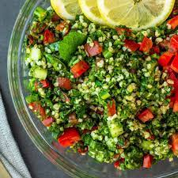
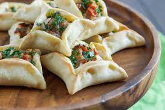
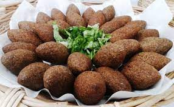

Famous food in lebanon!
Tabbouleh
This traditional Lebanese Tabbouleh (or tabouli) Salad is a healthy vegan Mediterranean appetizer made with bulgur, parsley, mint and chopped vegetables. Easy to make with just a handful of ingredients, this fresh salad is a real treat for the tastebuds!
Sfeeha
Sfeeha are what meat pie dreams are made of. Tiny little bitesize morsels of savoury yumminess. That's the only way to describe these Lebanese delicacies.
Kebbeh
Kebbeh’s main and constant ingredient is bulgur, cracked parboiled wheat. The most common type of kebbeh is made by kneading finely minced meat with bulgur and shaping it into balls or patties, with or without meat stuffing.